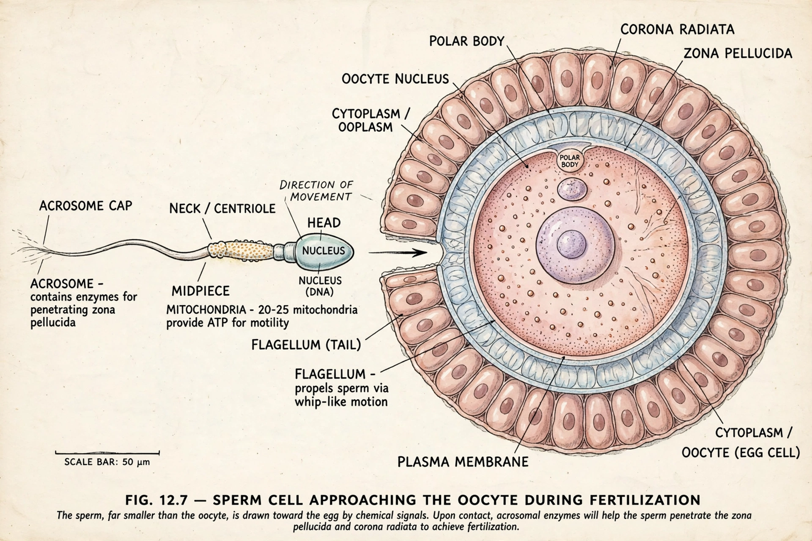

Fertilisation

| Also called | Conception; syngamy |
|---|---|
| Result | Zygote (diploid) |
| Location (humans) | Fallopian tube (ampulla) |
| Key steps | Capacitation, acrosome reaction, cortical reaction, pronuclear fusion |
Fertilisation (also spelled fertilization, and known as conception) is the fusion of gametes — a sperm and an egg (ovum) — to form a new organism, the zygote. It restores the diploid number of chromosomes and initiates embryonic development. In animals fertilisation may be external, as in most fish and amphibians, or internal, as in mammals, birds and reptiles.
Process in mammals
Sperm deposited in the female reproductive tract undergo capacitation before they can fertilise. Reaching the egg in the ampulla of the fallopian tube, a sperm binds the zona pellucida and undergoes the acrosome reaction, releasing enzymes that let it penetrate to the egg membrane. Fusion of the two cells triggers the cortical reaction, in which cortical granules harden the zona pellucida to block further sperm (polyspermy). The egg completes meiosis II, and the male and female pronuclei move together and combine their chromosomes; the resulting zygote begins cleavage divisions as it travels to the uterus for implantation.
In plants
Flowering plants perform double fertilisation: one sperm nucleus fuses with the egg to form the embryo, while a second fuses with two polar nuclei to form the triploid endosperm that nourishes the seed.
Assisted reproduction
In vitro fertilisation (IVF), first successful in humans in 1978, fertilises eggs outside the body; intracytoplasmic sperm injection (ICSI) injects a single sperm directly into an egg for male-factor infertility.